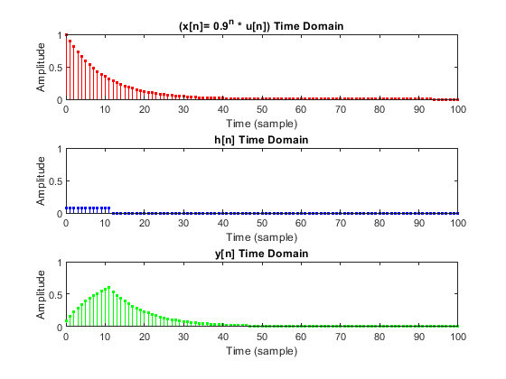
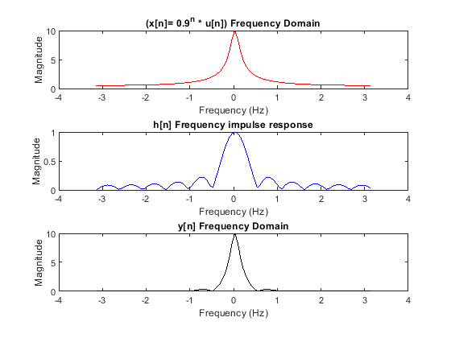
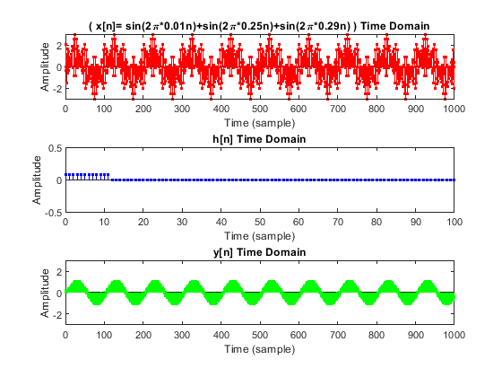
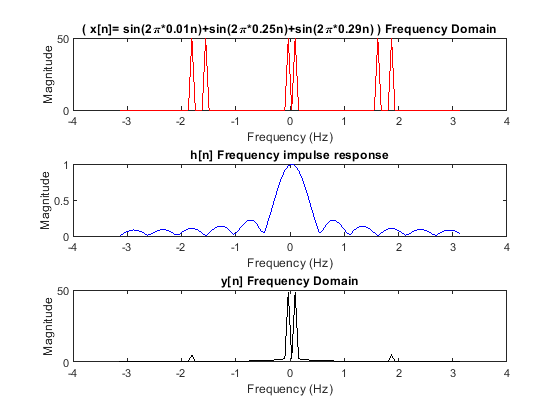
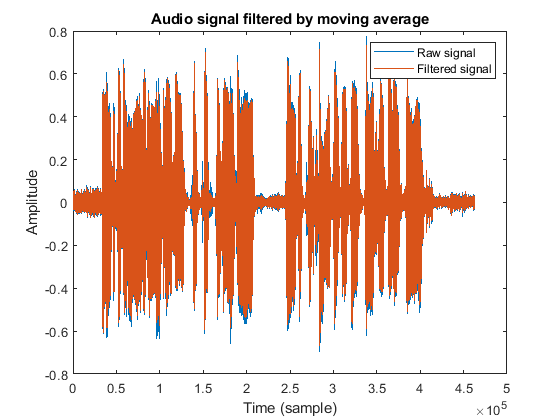

Digital Signal Processing MATLAB HW - q1
Professor: Dr. Sheikhzadeh Author: [Your Name] - [Your StdNum] E-mail: [Your Email] University: Amirkabir University of Technology
Contents
Clear recent data
clear; close all; clc;
Convolution in time doamain (part c)
% define parameters NoS1 = 100; n1 = 0 : NoS1; h = zeros(length(n1), 1); h(1 : 12) = 1 / 12; x1 = (0.9 .^ n1); % calculate convolution [y1, s1] = convolution(h, n1, x1, n1); % plot results in time domain figure(); subplot(3, 1, 1); stem(n1, x1, 'r.'); axis([0 NoS1 0 1]); title('(x[n]= 0.9^n * u[n]) Time Domain'); xlabel('Time (sample)'); ylabel('Amplitude'); subplot(3, 1, 2); stem(n1, h, 'b.'); axis([0 NoS1 0 1]); title('h[n] Time Domain'); xlabel('Time (sample)'); ylabel('Amplitude'); subplot(3, 1, 3); stem(s1, y1, 'g.'); axis([0 NoS1 0 1]); title('y[n] Time Domain'); xlabel('Time (sample)'); ylabel('Amplitude');
Convolution in frequency doamain (part c)
% calculate DTFT of signals [f_x1, fft_x1] = DTFT(x1, NoS1); [f_h, fft_h] = DTFT(h, NoS1); [f_y1, fft_y1] = DTFT(y1, NoS1); % show results in frequency domain figure(); subplot(3, 1, 1); plot(f_x1, fft_x1, 'r'); title('(x[n]= 0.9^n * u[n]) Frequency Domain'); xlabel('Frequency (Hz)'); ylabel('Magnitude'); subplot(3, 1, 2); plot(f_h, fft_h, 'b'); title('h[n] Frequency impulse response'); xlabel('Frequency (Hz)'); ylabel('Magnitude'); subplot(3, 1, 3); plot(f_y1, fft_y1, 'k'); title('y[n] Frequency Domain'); xlabel('Frequency (Hz)'); ylabel('Magnitude');
Convolution in time doamain (part d)
% define parameters NoS2 = 1000; n2 = 0 : 1000; x2 = sin(2 * pi * 0.01 * n2) + sin(2 * pi * 0.25 * n2) + sin(2 * pi * 0.29 * n2); % calculate convolution [y2, s2] = convolution(h, n1, x2, n2); % show results in time domain figure(); subplot(3, 1, 1); stem(n2, x2, 'r.'); axis([0 NoS2 -3 3]); title('( x[n]= sin(2\pi*0.01n)+sin(2\pi*0.25n)+sin(2\pi*0.29n) ) Time Domain'); xlabel('Time (sample)'); ylabel('Amplitude'); subplot(3, 1, 2); stem(n1, h, 'b.'); axis([0 NoS1 -0.5 0.5]); title('h[n] Time Domain'); xlabel('Time (sample)'); ylabel('Amplitude'); subplot(3, 1, 3); stem(s2, y2, 'g.'); axis([0 NoS2 -3 3]); title('y[n] Time Domain'); xlabel('Time (sample)'); ylabel('Amplitude');
Convolution in frequency doamain (part d)
% calculate DTFT of signals [f_x2, fft_x2] = DTFT(x2, NoS1); [f_y2, fft_y2] = DTFT(y2, NoS1); % show results in frequency domain figure(); subplot(3, 1, 1); plot(f_x2, fft_x2, 'r'); title('( x[n]= sin(2\pi*0.01n)+sin(2\pi*0.25n)+sin(2\pi*0.29n) ) Frequency Domain'); xlabel('Frequency (Hz)'); ylabel('Magnitude'); subplot(3, 1, 2); plot(f_h, fft_h, 'b'); title('h[n] Frequency impulse response'); xlabel('Frequency (Hz)'); ylabel('Magnitude'); subplot(3, 1, 3); plot(f_y2, fft_y2, 'k'); title('y[n] Frequency Domain'); xlabel('Frequency (Hz)'); ylabel('Magnitude');
Part e
% read audio file [sig, Fs] = audioread('voice.wav'); % sound(sig, Fs); % calculate convolution oSig = convolution(h, n1, sig, 0:length(sig)); % audio results figure(); plot(sig); hold on; plot(oSig); title('Audio signal filtered by moving average'); xlabel('Time (sample)'); ylabel('Amplitude'); legend('Raw signal', 'Filtered signal') % generate output sound and write audio audiowrite('voice_q1_output.wav', oSig, Fs); % sound(oSig, Fs);
M point DTFT (part a)
function [f, fft_sig] = DTFT(signal, M) if (length(signal) < M) error('M point is not larger than signal length!!'); end fft_sig = abs(fftshift(fft(signal, M))); f = linspace(-pi, pi, M); end
Convolution with time index (part b)
function [y, s] = convolution(u, n, v, m) y = conv(u, v); s = (m(1) + n(1)) : (m(end) + n(end)); end